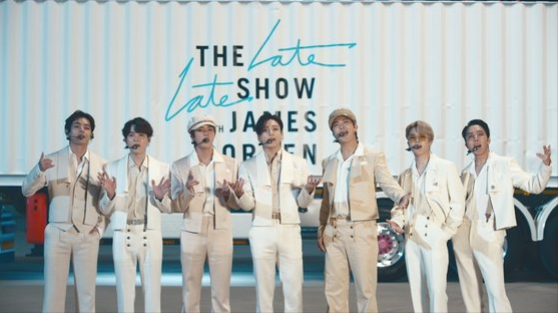

방탄소년단(BTS)이 한국어 곡으로 미국 빌보드 싱글 차트 정상에 올랐다. 빌보드는 30일(현지시간) 방탄소년단이 신곡 ‘라이프 고스 온(Life Goes On)’으로 빌보드 싱글 차트인 ‘핫 100’ 1위에 올랐다고 밝혔다. 지난달 20일 발표한 새 앨범 ‘BE’로 빌보드 앨범 차트 ‘빌보드 200’에서 5연속 1위를 차지한 데 이어 타이틀곡으로 ‘핫 100’ 1위에 오르면서 빌보드 양대 메인 차트를 동시에 석권한 것. 한국어 곡이 싱글 차트 정상에 오른 것은 빌보드 62년 역사상 처음이다.
푸에르토리코 출신 루이스 폰시와 대디 양키의 ‘데스파시토’와 1996년 14주간 정상에 오른 스페인 그룹 로스 델 리오의 ‘마카레나’, 1987년 멕시코계 미국인들이 결성한 밴드 로스 로보스가 리메이크한 ‘라 밤바’(원곡 리치 밸런스ㆍ1958) 모두 첫 주 1위는 아니었다. ‘빌보드 200’과 ‘핫 100’ 1위로 동시에 진입한 것은 지난 7월 발표한 앨범 ‘포크로어’와 타이틀곡 ‘카디건’으로 최초 기록을 거머쥔 미국 팝스타 테일러 스위프트와 방탄소년단 뿐이다.